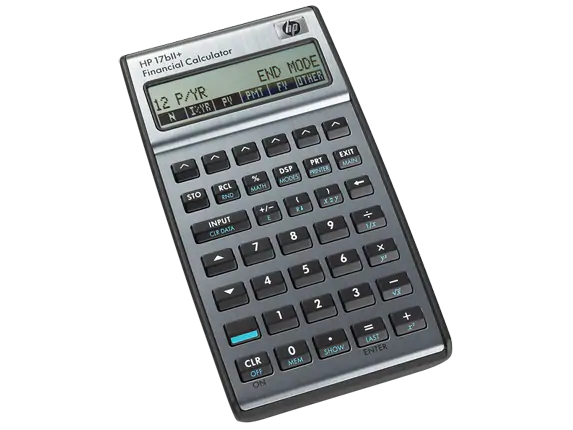
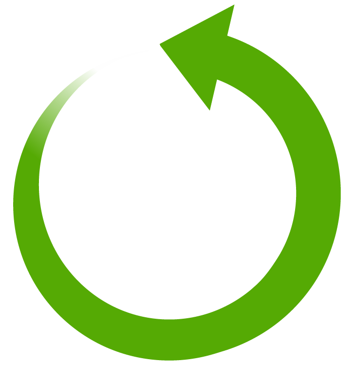

Les Bases
La syntaxe

Pour que notre code en python puisse être compris par notre ordinateur, nous devons l'écrire d'une certaine manière. C'est ce qu'on appelle la syntaxe.Par exemple, lorsque l'on veut déclarer une variable, celle-ci doit toujours se trouver à gauche du signe "=".
Il faut savoir que à chaque ligne correspond une commande.Nous ne pouvons pas déclarer deux variables sur une même ligne, il faut faire la sépartion par un retour à la ligne.
Pensez aussi que certaines fonction demande que l'on fasse des tabulations pour que celles-ci sachent ce qu'elles doivent exécuter.
Les variables
En python, comme dans plusieurs langages informatiques, il existe ce qu'on appelle des variables. Elles permettent de stocker des valeurs jusqu'à la fin de l'exécution du programme.
Ces variables peuvent prendre plusieurs types:
- int: Des nombres entiers (exemple: 50,20,1,-2)
- float: Des nombres réels (exemple: 50.1,60.7) La virgule s'écrit grâce à un point!
- str: Caractères (exemple: 'a','ABC','&','123') Notez l'importance des guillemets.
- list: Liste de variables (exemple: [1,2,'ABC'])
- dict: Liste de clés associées à des variables (exemple: {'oeufs':1,'Jambon':2,'lettre':'A'})
- bool: Valeur vraie ou fausse. On aura donc True ou False comme valeur.
Il faut donc utiliser la syntaxe adéquate qui est la suivante:
La fonction print
Maintenant que nous avons nos données, il faut pouvoir les présenter. Pour se faire nous allons utiliser la fonction print():
print(MaVariable)
Cette fonction ne sert pas que pour afficher notre résultat, elle peut aussi afficher du texte. Nous pouvons même mélanger le texte et nos variables:
print('Du texte ',MaVariable,' suite du texte ', DeuxiemeVariable)
Nous pouvons aussi très bien faire des calculs:
print('1+1=', 1+1)
- \n: Permet de faire un retour à la ligne.
- \t: Permet de faire une tabulation.
- \\: Permet d'afficher un slash.
- \" et \': Permet d'afficher des guillemets.
La fonction input
La fonction input permet de récupérer des données entrées par l'utilisateur. Ces données doivent être sauvegardées dans une variable:
MaVariable = input("Un peu de texte : ")
Vous n'avez besoin de rien d'autre, l'utilisateur rentrera ce qu'il veut (il faut donc prévoir les erreurs)
Cependant, peut importe ce qu'il rentrera, vous obtienderez toujours une valeur sous forme de str. Pour éviter celà, vous devez préciser au programme qu'il faut convertir la valeur comme dans l'exemple ci-dessous:
MaVariable = int(input("Je veut un entier : "))
Les conditions
Les conditions permettent de dire à notre programme d'effectuer certaines actions, seulement si la condition entrée est remplie. Nous allons donc utiliser :
- if: Pour vérifier une condition.
- elif: Pour vérifier une autre condition dans si une autre condition de notre bloc n'a pas été remplie.
- else: Si aucune des conditions n'a été remplie.
Pour pouvoir créer une condition, il faut aussi de quoi faire des comparaison:
- == : Permet de vérifier si c'est équivalant.
- != : Permet de vérifier si c'est différent.
- and : Permet de vérifier si deux conditions sont remplies.
- or : Permet de vérifier si au moins une condition est remplie.
Les listes et dictionnaires
Les listes
En Python, les listes sont des objets qui peuvent en contenir d'autres. Ce sont donc des séquences, comme les chaînes de caractères, mais au lieu de contenir des caractères, elles peuvent contenir n'importe quel objet.
Une liste utilise des "[ ]", c'est à ça que nous pouvons la reconnaitre:
MaListe = ["a", 1, MaVariable]

- MaListe[0]: Affiche le premier élément d'une liste.
- Maliste[-1]: Affiche le dernier élément de ma liste.
- MaListe[0:2]: Affiche le premier jusqu'au troisième élément d'une liste.
- MaListe.append(10): Ajoute l'élément 10 à ma liste.
- MaListe.extend(Liste2): Ajoute la Liste2 dans MaListe.
- del MaListe[0]: Supprime le premier élément d'une liste.
- Maliste.remove(A): Supprime la variable A de ma liste.
MonTuple = ("Langage", "Python")
Les dictionnaires
Les dictionnaires sont comme des listes, excepté qu'ils comportent des clé pour pouvoir les identifier:
MonDico = {"clé1":1, "clé2": 'A'}
Nous pouvons facilement ajouter une clé à un dictionnaire grâce à:
MonDico["NouvelleClé] = 42
Ceci ajoutera la clé "NouvelleClé" ayant comme valeur 42.
- MonDico.get("Name"): Donne la valeur de la clé "Name".
- MonDico.get("Name", "Pas de nom"): Donne la valeur de la clé "Name" et la crée avec comme valeur "Pas de nom" si elle n'existe pas.
- MonDico.has_key("Name"): Renvoie un booléen pour savoir si la clé existe.
- del MonDico["nom"]: Supprime la clé "nom".
- fiche.keys(): Récupère la clé à l'aide d'une boucle.
- fiche.values() : Récupère les données à l'aide d'une boucle.
- fiche.items() : Récupère les données et la clé à l'aide d'une boucle et les place dans un tuple.
Les boucles

Les boucles, comme leur nom l'indique, permettent d'effectuer du code en boucle.
La boucle for
La boucle for exécute du code jusqu'à ce qu'elle arrive à la fin de son compteur:
for i in (0,10):
Ici, la valeur de i changera à chaque boucle (vous pouvez vous asumer à l'afficher).
Nous avons aussi la possibilité d'utiliser des listes:
for i in MaListe:
Ici, i prendra chaque valeur de notre liste.
La boucle while
La boucle while permet d'exécuter du code temps que sa condition est remplie:
while (i<10):
Ici, nous aurons une boucle jusqu'à ce que la valeur de i soit plus grande que 10.
Faites attention à ce que votre condition puisse se terminer ou sinon vous aurez une boucle infinie!
Les fonctions
Une fonction est une suite d'instruction que l'on peut appeller.
Pour pouvoir utiliser une fonction, il faut d'abord la définir:
def MaFonction(Option):
"""Documentation de ma fonction"""
print("C'est ma fonction")
Remarque: Les fonctions n'ont pas nécessairement des options à chaque fois. Elle peuvent en avoir plusieurs aussi.
Les options permettront d'envoyer les valeurs des variables dans notre fonction pour qu'elle puisse les utiliser.
Pour que notre fonction renvoie un résultat, il faut utiliser "return" suivi de ce que nous voulons renvoyer. Le return mettra fin à notre fonction et renverra une seule variable, c'est pourquoi nous utiliserons une liste pour renvoyer plusieurs valeurs. Il faut cependant penser à sauvegarder le résultat dans une variable:
MaVariable = MaFonction()